Отчет по практической работе №3.1
Задачи
- Написать запрос на создание 6-7 новых автовладельцев и 5-6 автомобилей, каждому автовладельцу назначьте удостоверение и от 1 до 3 автомобилей. Результатом должны стать запросы и отображение созданных объектов. Если добавляете автомобили владельцу через метод .add(), не забудьте заполнить также ассоциативную сущность “владение”2. Реализовать функционал добавления, редактирования и удаления данных.
- По созданным данным написать запросы на фильтрацию.
- Необходимо реализовать следующие запросы c применением агрегации и аннотации.
Ход работы
1. Вставляем данные
Написали код для создания и добавления данных и реализовали через интерактивный режим.
Код
from datetime import datetime
from blog.models import User, Owner, Car, Ownership, DriverLicense
# Создание пользователей
user1 = User.objects.create_user(
username="ivan_petrov",
password="securePass123",
passport_number="4812567890",
address="г. Москва, ул. Арбат, д. 10",
nationality="Россия"
)
user2 = User.objects.create_user(
username="anna_smirnova",
password="securePass123",
passport_number="5723689012",
address="г. Санкт-Петербург, пр. Невский, д. 20",
nationality="Россия"
)
user3 = User.objects.create_user(
username="sergey_ivanov",
password="securePass123",
passport_number="6934789023",
address="г. Казань, ул. Баумана, д. 5",
nationality="Россия"
)
user4 = User.objects.create_user(
username="maria_komarova",
password="securePass123",
passport_number="7045890123",
address="г. Новосибирск, ул. Красный проспект, д. 15",
nationality="Россия"
)
user5 = User.objects.create_user(
username="dmitry_fedorov",
password="securePass123",
passport_number="8156901234",
address="г. Екатеринбург, ул. 8 Марта, д. 7",
nationality="Россия"
)
user6 = User.objects.create_user(
username="olga_stepanova",
password="securePass123",
passport_number="9267012345",
address="г. Владивосток, ул. Светланская, д. 12",
nationality="Россия"
)
# Создание автомобилей
car1 = Car.objects.create(license_plate="A111AA77", brand="BMW", model="X5", color="Черный")
car2 = Car.objects.create(license_plate="B222BB77", brand="Mercedes", model="C-Class", color="Белый")
car3 = Car.objects.create(license_plate="C333CC77", brand="Audi", model="A4", color="Серый")
car4 = Car.objects.create(license_plate="D444DD77", brand="Volkswagen", model="Passat", color="Синий")
car5 = Car.objects.create(license_plate="E555EE77", brand="Volvo", model="XC60", color="Красный")
car6 = Car.objects.create(license_plate="F666FF77", brand="Toyota", model="RAV4", color="Зеленый")
# Создание водительских удостоверений и связывание с владельцами
owners = [user1, user2, user3, user4, user5, user6]
cars = [car1, car2, car3, car4, car5, car6]
for i, user in enumerate(owners):
DriverLicense.objects.create(
owner=user,
license_number=f"DL{i+1}67890",
license_type="B",
issue_date=datetime(2020 + i, 5, 10)
)
# Назначение автомобилей
owned_cars = cars[i % len(cars):i % len(cars) + 2] # Берём до 2 автомобилей, начиная с текущего индекса
for car in owned_cars:
Ownership.objects.create(
owner=user,
car=car,
start_date=datetime(2021 + i, 3, 15)
)
# Отображение созданных объектов
print("Пользователи:")
for user in User.objects.all():
print(user)
print("\nАвтомобили:")
for car in Car.objects.all():
print(car)
print("\nВодительские удостоверения:")
for license in DriverLicense.objects.all():
print(license)
print("\nВладения:")
for ownership in Ownership.objects.all():
print(ownership)
Вывод
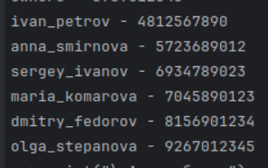
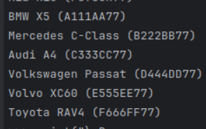
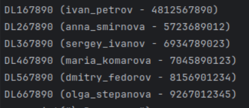
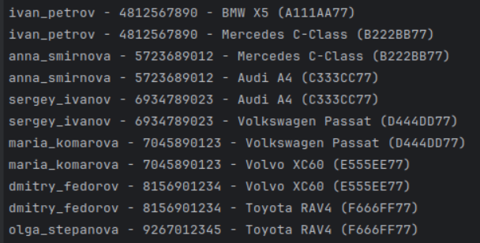
2. Фильтрация
- Выведете все машины марки “Toyota” (или любой другой марки, которая у вас есть)
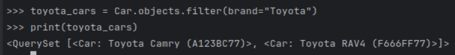
- Найти всех водителей с именем “Олег” (или любым другим именем на ваше усмотрение)
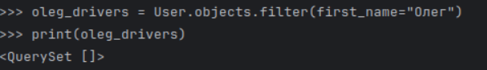
- Взяв любого случайного владельца получить его id, и по этому id получить экземпляр удостоверения в виде объекта модели (можно в 2 запроса)
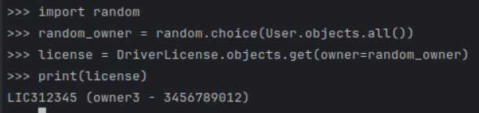
- Вывести всех владельцев красных машин (или любого другого цвета, который у вас присутствует)
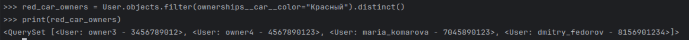
- Найти всех владельцев, чей год владения машиной начинается с 2010 (или любой другой год, который присутствует у вас в базе)
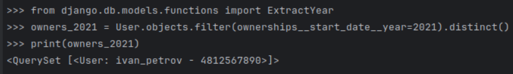
3. Агрегация и аннотация запросов
- Вывод даты выдачи самого старшего водительского удостоверения
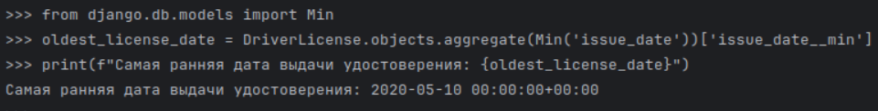
- Укажите самую позднюю дату владения машиной, имеющую какую-то из существующих моделей в вашей базе
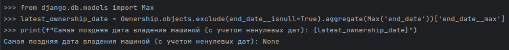
- Выведите количество машин для каждого водителя
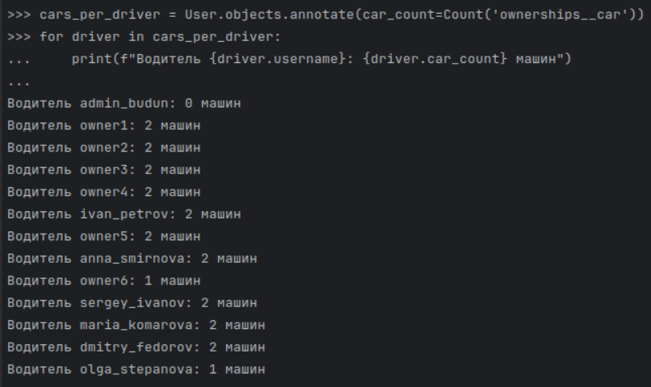
- Подсчитайте количество машин каждой марки
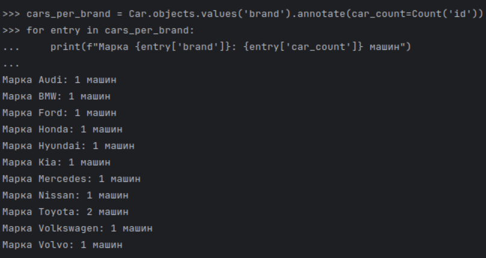
- Отсортируйте всех автовладельцев по дате выдачи удостоверения
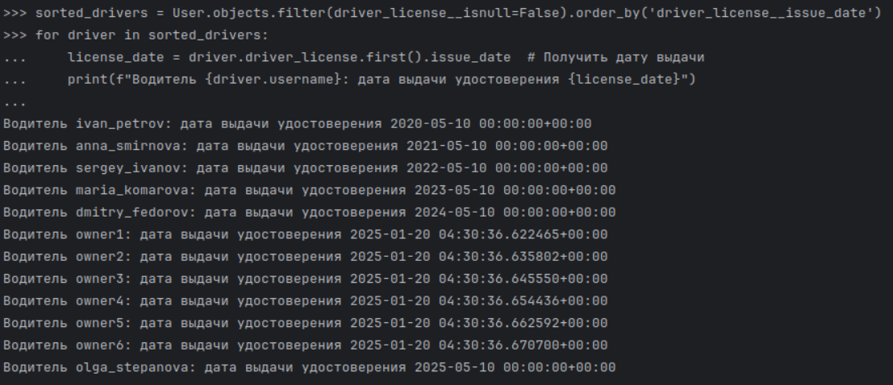